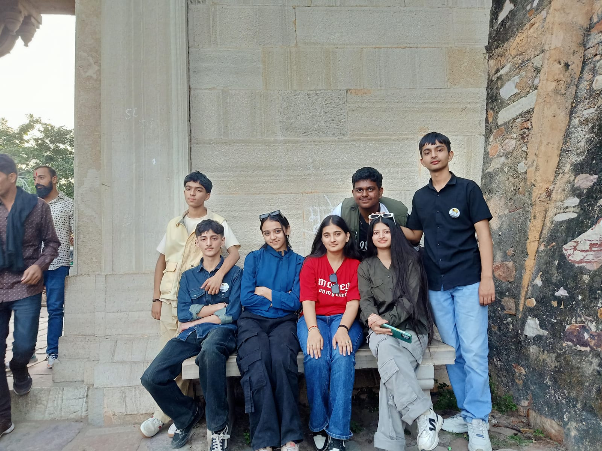
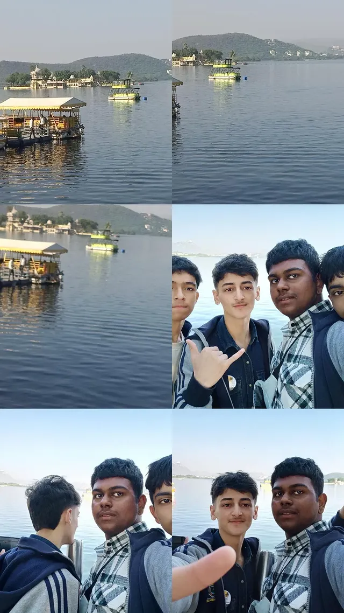
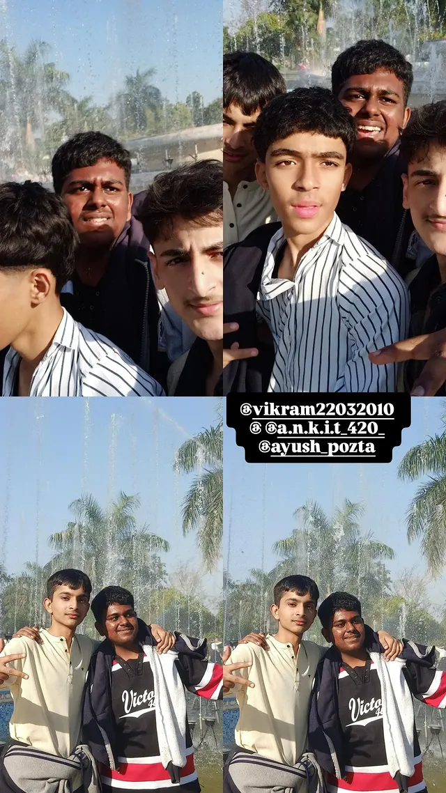
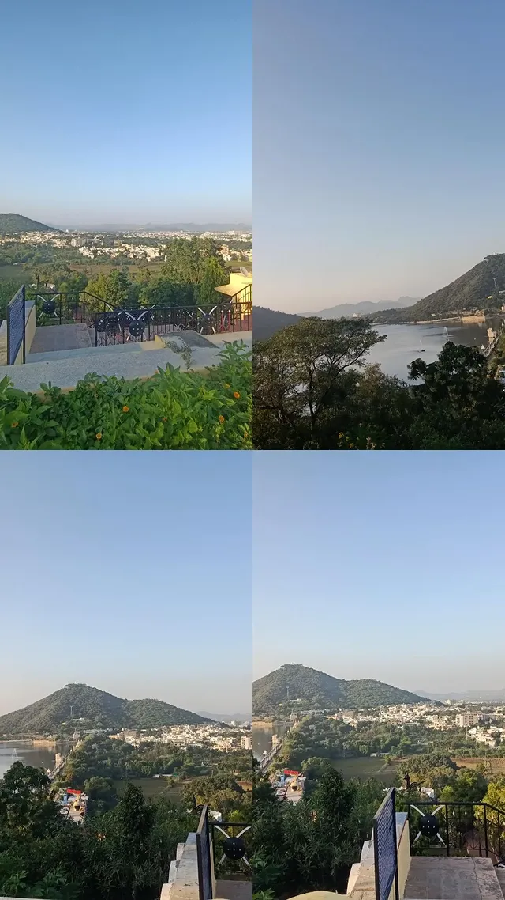

Udaipur, often called the City of Lakes, is a stunning destination in Rajasthan known for its royal palaces, peaceful lakes, and charming old streets. The city blends natural beauty with rich history, making it one of India’s most romantic tourist spots. Popular attractions include the magnificent City Palace, the serene Lake Pichola, and the historic Jag Mandir. From boat rides to exploring vibrant markets, Udaipur offers an unforgettable experience for every traveler.
A memorable moment from Chittorgarh Fort, one of the largest forts in India. Known for its bravery, history, and massive architecture, the fort stands as a symbol of Rajputana pride.
A peaceful park in Udaipur where we spent a calm evening together. Lush greenery and a relaxing environment made it a perfect spot for photos and fun.

A fun moment with friends near the riverside. One of those memories that stay special forever.
A photo capturing our bond — more like family than friends.
A quiet and beautiful garden inspired by Rajput architecture — one of the most peaceful places we visited.
